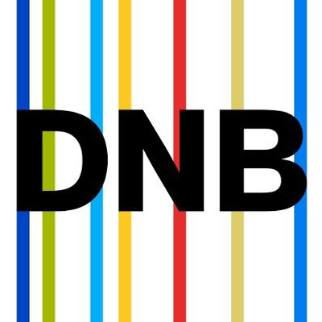

<div class="header-options artistAdditionalOptions">
      <semantic-query
        query='SELECT ?tLabel ?link WHERE {             
            ?subject owl:sameAs <[[this]]>.
            ?subject crm:P1_is_identified_by ?value.
            ?value <http://www.cidoc-crm.org/cidoc-crm/P2_has_type> ?type.
            ?type rdfs:label "GND or ULAN".
            ?type rdfs:label ?tLabel.
            ?value rdfs:label ?id.
            BIND(IRI(REPLACE(?id,"gnd", "https://d-nb.info/gnd/")) AS ?link)
            FILTER CONTAINS(?id,"gnd")
        }'
        no-result-template="<div></div>"
        template="{{> DNBLink}}"
      >
        <template id="DNBLink">
          <div>
            <h2 class="fc-label" style="width: 60vw;">
              
              <a
                style="margin-left: 5px"
                href="{{bindings.0.link.value}}"
                target="_null"
              >
                <div class="fc-label original-linkDNB">
                  <div class="linkImageWrapper">
                  
                  <h2 class="text">View GND record</h2>
                  </div>
                </div>
              </a>
              
            </h2>
          </div>
        </template>
      </semantic-query>

        <div>
          <h2 class="fc-label" style="width: 60vw;">
            
            <a
              style="margin-left: 5px"
              href="[[this]]"
              target="_null"
            >
              <div class="fc-label original-linkDNB">
                <div class="linkImageWrapper">
                
                <h2 class="text">View GETTY record</h2>
                </div>
              </div>
            </a>
            
          </h2>
        </div>
      </div>
<div id="printableInfo"  class="workAndProductionInfo">

      <mp-field-visualization
          subject="[[this]]"
          additional-subjects='[[jsonArrayFromSelect (setQueryBindings "SELECT ?s WHERE { ?s owl:sameAs ?resource }" resource=this.iri)]]'
          fields='[[ fieldDefinitionsFromQuery "SELECT ?field WHERE {  ?field <http://www.researchspace.org/resource/system/fields/category>  <http://www.researchspace.org/ontologies/platform/FieldCategories/person_info>. OPTIONAL {?field <http://www.researchspace.org/resource/system/fields/order> ?w. BIND(xsd:integer(?w) as ?orderNo)} } ORDER BY ASC(?orderNo)" ]]'
          template='{{>workInfo}}'
          >
        <template id="workInfo">
          <div class="workInfoContainer">
          <h2>Person info</h2>
            [[> :ResourceFieldBasedVisualizationCardPerson subject=[[this]] showSourceIcon="true" ]]
          </div>
        </template>
        </mp-field-visualization>
<div class="WrapperBioRelations">

     <div class="PersonBioCard">
          <semantic-query
              
             query='
                SELECT ?value ?provider ?providerLabel WHERE {
                  graph ?graph{
                     <[[this]]> <https://pharos.artresearch.net/resource/fr/Person_has_Description> ?value.
                  }
                  ?graph <https://pharos.artresearch.net/custom/has_provider> ?provider .
                  ?provider rdfs:label ?providerLabel.
                }'
                no-result-template='<div></div>'
                template="{{> Bio}}"
                >
                  <template id="Bio">
                    <div class= "bioTemplate " >
                     
                      <div class="BioText">
                        <h2 class=" fa fa-quote-left">{{bindings.0.value.value}}</h2>
                      </div>
                    </div>
                  </template>
           </semantic-query>
      </div>
   <mp-field-visualization
          subject="[[this]]"
          additional-subjects='[[jsonArrayFromSelect (setQueryBindings "SELECT ?s WHERE { ?s owl:sameAs ?resource }" resource=this.iri)]]'
          fields='[[ fieldDefinitionsFromQuery "SELECT ?field WHERE {  ?field <http://www.researchspace.org/resource/system/fields/category>  <http://www.researchspace.org/ontologies/platform/FieldCategories/person_relationships>. OPTIONAL {?field <http://www.researchspace.org/resource/system/fields/order> ?w. BIND(xsd:integer(?w) as ?orderNo)} } ORDER BY ASC(?orderNo)" ]]'
          template='{{>RelationshipsInfo}}'
          >
        <template id="RelationshipsInfo">
          <div class="RelationshipsContainer">
          <h2>Relationships</h2>
            [[> :ResourceFieldBasedVisualization subject=[[this]] showSourceIcon="true" ]]
          </div>
        </template>
        </mp-field-visualization>

     
        
  </div>
<style>
    body {
    line-height: 0 !important;
  }
    .fa-quote-left:before {
    margin-right: 10px;
    color: #933439;
  }
</style>